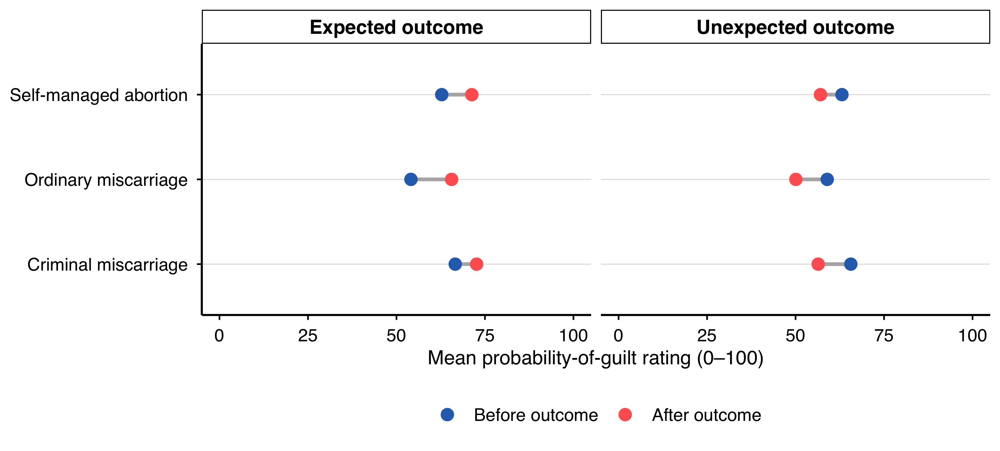
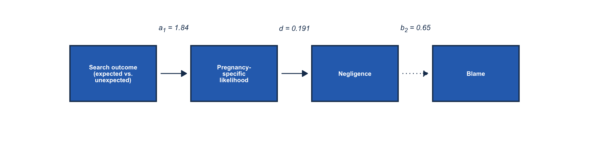
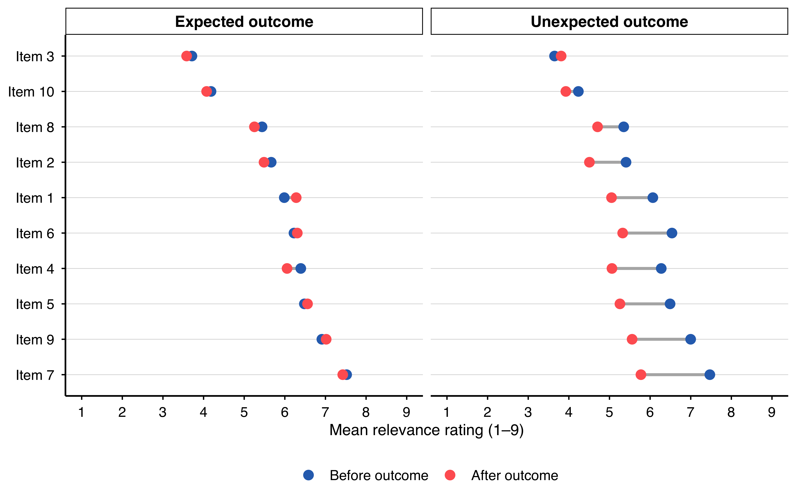
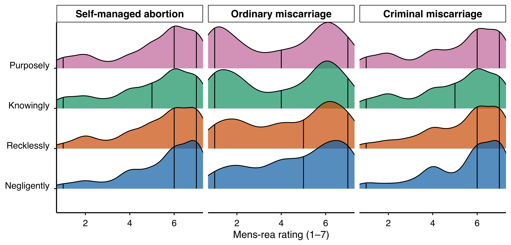

Participants rated pregnancy-evidence likelihood before learning what the search found. I compared their later ratings with their own pre-search ratings.
Pregnancy-Evidence Likelihood and Guilt
I examined changes after expected incriminating evidence in ratings of illegally obtained abortion (Item 1) and improper disposal or concealment of the loss (Item 2). Table P2.2 reports the six before-to-after contrasts and comparisons of outcome specificity. In the self-managed abortion case, participants increased the Item 1 rating (b = 16.74, 95% credible interval [11.83, 21.49], p(b > 0) > .999). The increase was greater for Item 1 than Item 2 (b = 18.65, 95% credible interval [12.08, 25.67], p(b > 0) > .999), consistent with the outcome specificity described by Yopchick & Kim (2012).
r
# Keep the two families and their signed probabilities explicit.p2_rq1_input <-bind_rows( p2_a1 |>mutate(contrast =paste0("Before-to-after — ", contrast)), p2_a2 |>mutate(contrast =paste0("Specificity — ", contrast)))dissAPA::apa_render(supp_bayes_table(p2_rq1_input), engine ="auto")
Table P2.2 Pilot 2 RQ1 primary contrasts on likelihood items. The before-to-after contrasts test the expected-outcome before-to-after shift on the pregnancy-specific composite (Item 1 + Item 2). The specificity contrasts test whether the shift is specific to Items 1 and 2 versus the financial-crime filler (Item 3). All sub-hypotheses other than the case-ordering diagnostic are primary. * 95% CrI excludes zero.
Quantity
Estimate
95% HDI
Pr(effect > 0)
Before-to-after — RH2.2 expected outcome before-to-after · self-managed-abortion case — SMA item
Specificity — RH2.3 timing x outcome on the Financial item, VIGNETTE-AVERAGED (registered criterion)
22.750*
[18.890, 26.580]
> .999
Specificity — RH2.3 sub-condition: HUCE pre->post increase on the Financial item, vignette-averaged (credibly positive required)
22.080*
[19.420, 24.890]
> .999
Specificity — RH2.3 sub-condition: HACE pre->post change on the Financial item, vignette-averaged (near zero required)
−0.670
[−3.480, 2.090]
.321
Specificity — descriptive: same contrast @ SMA
21.710*
[15.130, 27.900]
> .999
Specificity — descriptive: same contrast @ NCM
21.590*
[15.890, 27.470]
> .999
Specificity — descriptive: same contrast @ CM
24.980*
[18.650, 31.480]
> .999
Subjective probability of guilt. I also compared participants’ guilt-probability ratings before and after the search outcome (Table P2.3). The table includes the main effect on foreseeability, and Figure P2.1 connects the mean guilt-probability ratings before and after the outcome for each vignette and outcome condition.
r
# Prefix each family and retain Pr(effect > 0), without relabelling it pd.p2_rq3_input <-bind_rows( p2_slider |>mutate(contrast =paste0("Rating, before/after — ", contrast)), p2_p3 |>mutate(contrast =paste0("Foreseeability — ", contrast)))dissAPA::apa_render(supp_bayes_table(p2_rq3_input), engine ="auto")
Table P2.3 Pilot 2 RQ1 before/after subjective-probability-of-guilt rating and foreseeability contrasts. Rating rows report within-participant before-to-after shifts; the foreseeability row reports the within-participant before-to-after main effect on the foreseeability composite. * 95% CrI excludes zero.
Figure P2.1 Pilot 2 before-to-after shift in the subjective probability-of-guilt rating (0–100): each vignette’s mean rating before the outcome connected to its mean rating after, faceted by the revealed outcome (expected vs. unexpected).

Evidence reinterpretation (RQ3). The primary result for evidence reinterpretation uses the measurement model selected in Table P2.8. Table P2.13 reports the same indirect effect with the observed composite (RH3.1) and the indirect effects for each vignette (E3.1). Those results are secondary. They did not determine which measurement model was primary.
Pregnancy-Specific Likelihood and Foreseeability Across the Cases.
Following Nestler & Egloff (2009), I adapted the distinction between hindsight components to the cases in this study (see Chapter 4). If foreseeability and pregnancy-specific likelihood reflect different mechanisms, the largest increases should occur in different cases, producing opposite orderings across cases rather than opposite changes within a case. The gain in likelihood should be largest in the criminal miscarriage case, where the outcome is easiest to reconcile with the facts. The gain in foreseeability should be largest in the self-managed abortion case, where the outcome is least surprising. The test is therefore the difference between the self-managed abortion and criminal miscarriage cases. I predicted that this difference would be positive for foreseeability and negative for the likelihood. Table P2.4 reports the before-to-after changes in each component for each case.
Table P2.4 Pilot 2 RQ1 component dissociation: per-case likelihood vs. foreseeability expected-outcome before-to-after shifts and the posterior probability that the two shifts carry opposite signs.
Case contrast
pregnancy-specific likelihood shift
foreseeability shift
P(opposite-signed)
Self-managed abortion vs. criminal miscarriage
0.03
−0.03
.175
A related test asked whether the change after expected evidence was larger for pregnancy-specific foreseeability than for general foreseeability. Table P2.14 reports the change in each measure and the difference between them.
Evaluations of the Detective’s Decision.
The analyses in Table P2.5 are exploratory. I expected ratings of the quality of the detective’s decision to fall from before to after the outcome under both expected and unexpected evidence (i.e., a before-to-after main effect). I did not expect the two kinds of evidence to differ on the composite. The exploratory analyses split the change into a hindsight route (i.e., through evidence reinterpretation) and an outcome-bias route (i.e., through the preference for false-positive or false-negative errors). Table P2.5 reports the contrasts and both routes.
Table P2.5 Pilot 2 RQ2 decision-quality contrasts and indirect-path decomposition (both exploratory). * 95% CrI excludes zero.
Contrast / route
Estimate
95% CrI
P(b > 0)
Decision-quality contrasts (Exploratory)
Decision-quality contrasts (Exploratory)
Decision-quality contrasts (Exploratory)
Decision-quality contrasts (Exploratory)
RH4.1 decision-quality Timing main effect (post - pre; registered direction positive), vignette-averaged
0.17*
[0.09, 0.25]
> .999
RH4.2 timing x outcome (expected outcome > unexpected outcome), vignette-averaged
0.27*
[0.12, 0.42]
> .999
Indirect decomposition (Exploratory)
Indirect decomposition (Exploratory)
Indirect decomposition (Exploratory)
Indirect decomposition (Exploratory)
hindsight route (a_s * b_s)
0.14*
[0.09, 0.19]
> .999
direct outcome-bias route (a_sigma * b_sigma)
0.04*
[0.003, 0.07]
.988
index of moderated mediation (a_sigma * mod)
−0.001
[−0.03, 0.02]
.430
Three more tables report related results. Table P2.15 reports E4.1 with specific foreseeability in place of the subjective probability of guilt. Table P2.16 reports the E4.3 indirect effects for each vignette and two relative indices. For RH4.1, I expected participants to evaluate the detective’s decision more favorably after learning the search outcome. The descriptive before-to-after coefficient for RH4.1 appears in Table P2.17; I used the change in subjective probability of guilt as E4.1’s primary mediator. The negative exploratory expectation above was separate from RH4.1.
Judgments of the Detective.
These analyses are exploratory. E6.1 tested the effects of the search outcome on the detective’s blameworthiness, the consequences the detective deserved, and the wrongness of the decision. E6.4 tested a path from outcome-specific foreseeability through the detective’s blameworthiness to the consequences the detective deserved. I expected this indirect effect to be negative. Table P2.20 also reports the direct effect of the outcome at each level of error preference and the difference between them.
Model of Suspect Blame Through Likelihood and Negligence.
For H5a, I estimated the indirect effect of expected versus unexpected incriminating evidence on suspect blame through pregnancy-specific likelihood and then negligence. The product of the three path coefficients was the primary indirect effect (Table P2.6; posterior median = 0.220, 95% credible interval [−0.030, 0.503], p(indirect > 0) = .962). That table also gives the extension with likelihood, foreseeability, negligence, and recklessness as parallel mediators. I report the remaining direct effects on blame and punishment in Table P2.7, the fitted chain in Figure P2.3, and the indirect-effect intervals in Figure P2.2.
r
# Confirmatory serial and exploratory four-mediator quantities, with signed probabilities.p2_rq4_input <-bind_rows( p2_c4 |>mutate(label =paste0("Primary serial — ", contrast)), p2_c4c |>mutate(label =paste0("Exploratory four-mediator — ", mediator))) |>select(label, estimate, hdi_low, hdi_high, p_gt_0)dissAPA::apa_render(supp_bayes_table(p2_rq4_input, "label"), engine ="auto")
Table P2.6 Pilot 2 RQ3 indirect paths. The primary row reports the serial indirect through likelihood, negligence, and blame; the exploratory rows report the four-mediator extension. * 95% CrI excludes zero.
Quantity
Estimate
95% HDI
Pr(effect > 0)
Primary serial — RH5.4 serial indirect (a1 * d * b2)
0.220
[−0.030, 0.503]
.962
Primary serial — Single-mediator indirect through p_preg (a1 * b1)
0.389*
[0.111, 0.675]
.997
Primary serial — Direct path c' (expected vs. unexpected outcome)
p2_c4 |> dplyr::transmute(label =factor(dplyr::recode(contrast,"RH5.4 serial indirect (a1 * d * b2)"="Serial indirect","Single-mediator indirect through p_preg (a1 * b1)"="Single-mediator indirect","Direct path c' (expected vs. unexpected outcome)"="Direct path (c′)"),levels =c("Direct path (c′)", "Single-mediator indirect", "Serial indirect")), estimate, hdi_low, hdi_high) |> ggplot2::ggplot(ggplot2::aes(x = estimate, y = label)) + ggplot2::geom_vline(xintercept =0, linetype ="dashed", colour ="grey55") + ggplot2::geom_pointrange(ggplot2::aes(xmin = hdi_low, xmax = hdi_high),colour ="#2c6fbb", fatten =2.6, linewidth =0.7) + ggplot2::labs(x ="Effect on suspect blame (95% HDI)", y =NULL) + dissAPA::theme_tp_apa()
Figure P2.2 Pilot 2 RQ3 blame-cascade path decomposition: the primary serial indirect effect, the single-mediator indirect, and the residual direct path, each as a posterior median with its 95% highest-density interval; the dashed line marks zero.
Table P2.7 Pilot 2 RQ3 residual direct effect (c′) after adjustment for the serial chain (blame-versus-punishment diagnostic). A near-zero c′ on blame is the Kneer & Skoczeń (2023) blame pattern; a retained positive c′ on punishment is the Cushman (2008) punishment pattern. * 95% CrI excludes zero.
Contrast
c′
95% CrI
P(c′ > 0)
P(c′ < 0)
direct pregnancy-specific likelihood (between) -> punishment
Figure P2.3 Pilot 2 RQ3 primary serial chain (between-person, fitted): the kind of incriminating evidence found (expected vs. unexpected outcome) → pregnancy-specific likelihood → negligence → suspect blame. Each arrow is annotated with the posterior median of the corresponding path coefficient; solid arrows mark paths whose 95% HDI excludes zero, dotted arrows mark paths whose HDI includes zero.

I compared the likelihood–negligence and foreseeability–negligence routes from outcome information to blame (E5.1). Table P2.12 reports the two indirect-effect products, their difference, and the direct effect. Adding relevance before likelihood gave the longer relevance–likelihood–negligence route to blame in E5.7, for which I obtained a bias-corrected bootstrap interval (Table P2.18).
Attitudes as moderators and mediators (exploratory). I examined whether abortion attitudes moderated the outcome differences in pregnancy-specific likelihood and foreseeability (E5.4), comparing estimates at 1 SD below and above the attitude mean. E5.6 concerned the indirect associations of the sexism subscales with punishment through support for punishment and abortion attitudes (Table P2.19).
Evidence Reinterpretation and Search Targets
The search-target pathway was discontinued on September 7, 2026.
I describe the change in relevance using the composite in Table P2.25 and individual items within each vignette in Table P2.26. The item comparisons have unadjusted p values. The registered RH1.4 analysis separately tests the interaction between timing and item consistency (see Evidence Reinterpretation (RQ3)).
r
dissAPA::geom_dumbbell_apa(as.data.frame(p2_eg_prepost),foresight ="before", hindsight ="after",group ="item", facet_by ="outcome",labels =c("Before outcome", "After outcome"),x_lab ="Mean relevance rating (1–9)") + ggplot2::coord_cartesian(xlim =c(1, 9)) +# full 1–9 relevance scale (PI 2026-09-28: full axes on every figure) ggplot2::scale_x_continuous(breaks =1:9)
Figure P2.4 Pilot 2 foresight-to-hindsight shift in evidence relevance: each affidavit evidence item’s mean relevance rating (1–9) before the outcome connected to its rating after, faceted by the revealed outcome (expected vs. unexpected).

Search Endorsement
Participants’ certainty requirements and the endorsement thresholds are different quantities. The thresholds concern the subjective probability of guilt at which the model predicts a .50 probability of approving a search. The observed endorsement proportions appear in Table P2.21.
For E7.7, Table P2.22 gives the model-derived thresholds for the sample as a whole and the share of posterior draws with a threshold inside the guilt-probability scale. I treated differences in the ordering of search targets as descriptive; I did not test that ordering.
Mens-Rea Attributions by Search Scenario.
The figure displays participants’ post-search ratings of the four Model Penal Code culpability levels within each search scenario, as referenced in Chapter 5. Table P2.28 gives the registered RH5.6 comparisons between adjacent levels.
r
# One row per rating (columns facet = the search scenario, rung, rating), the chapter's data file. Drawn as the chapter# drew it (dissAPA::geom_ridges_apa(), one facet per scenario, the 1-7 scale), in colour, as the chapter first drew it.p2_rungs <-read_p2("p02_mpc_rungs_long.csv")if (is.null(p2_rungs)) { knitr::asis_output("The mens-rea distributions render once p02_mpc_rungs_long.csv has been exported.")} else { p2_r <-as.data.frame(p2_rungs) p2_r$facet <-factor(p2_r$facet, levels =c("Self-managed abortion", "Ordinary miscarriage", "Criminal miscarriage")) p2_r$rung <-factor(p2_r$rung, levels =c("Negligently", "Recklessly", "Knowingly", "Purposely"))stopifnot("p02_mpc_rungs_long.csv carries a scenario or rung label this figure does not know"=!anyNA(p2_r$facet) &&!anyNA(p2_r$rung)) dissAPA::geom_ridges_apa(p2_r, x = rating, y = rung, fill = rung, palette ="apa", x_lab ="Mens-rea rating (1–7)") + ggplot2::facet_wrap(~ facet) + ggplot2::coord_cartesian(xlim =c(1, 7))}
Figure P2.5 Pilot 2 density of the post-search mens-rea ratings (1–7) for each Model Penal Code culpability level, by search scenario. Lines mark the median and 95% interval of each distribution.

Robustness Diagnostics.
The registered RH5.6 decision rests on the adjacent-level contrasts in Table P2.28. Table P2.27 describes the probability of the complete ordering; Table P2.34 retains the earlier simulated ordering summaries for the nothing-incriminating outcome.
RH5.6 requires the 95% HDIs for purposely minus knowingly and recklessly minus negligently to lie above zero in both outcome conditions. I also report knowingly minus recklessly, although the rule does not require it. The result appears as H5d in Mens Rea Hierarchy (H5d). For RH5.4, Table P2.29 compares the sensitivity estimates with the primary estimate, indicating agreement in sign and whether each interval excludes zero.
References
Cushman, F. (2008). Crime and punishment: Distinguishing the roles of causal and intentional analyses in moral judgment. Cognition, 108(2), 353–380. https://doi.org/10.1016/j.cognition.2008.03.006
Nestler, S., & Egloff, B. (2009). Increased or reversed? The effect of surprise on hindsight bias depends on the hindsight component. Journal of Experimental Psychology: Learning, Memory, and Cognition, 35(6), 1539–1544. https://doi.org/10.1037/a0017006
Yopchick, J. E., & Kim, N. S. (2012). Hindsight bias and causal reasoning: A minimalist approach. Cognitive Processing, 13(1), 63–72. https://doi.org/10.1007/s10339-011-0414-z
![ORCID]()